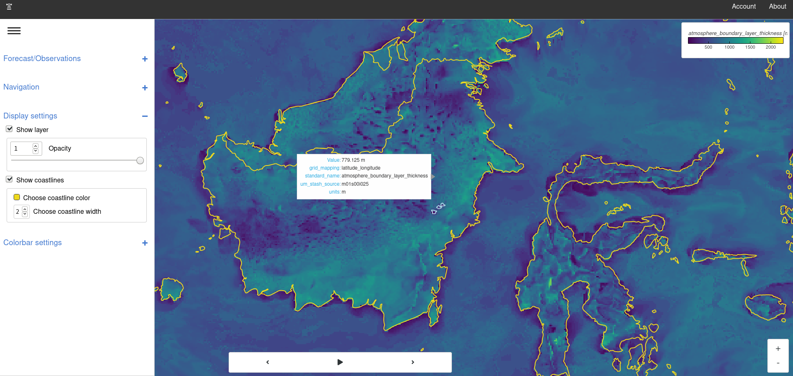
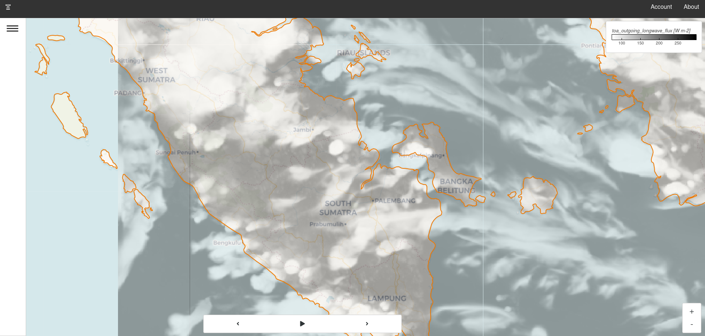

Introduction
FOREST - Forecast Observation Research Exploration and Survey Tool
forest_lite is a visualisation tool for Earth science data. It
supports two common workflows; either investigate a
file locally or compare datasets. A dataset is a collection of
related data, it can be local or remote. The application itself
also works equally well on the command line or deployed to cloud
infrastructure.

Above: FOREST-Lite displaying South-east Asia 4.4km model
Open a file
To quickly display a single file use the open command. This
will start a server and open a browser tab with the contents of your
file on display.
forest_lite open ${name_of_file}
Note
forest_lite uses the iris driver by default.
For alternative drivers please use the --driver flag
Compare multiple datasets
Exploring a file locally can be convenient but sometimes a more useful approach may be to group the content of multiple files into a single collection called a dataset.
In the context of Earth science a dataset could be an atmospheric simulation or observations from an observing network. As long as there are dimensions to support navigation, e.g. pressure level, time, parameter etc., then a user can explore it.
Note
A dataset does not necessarily need to be on a local file system it could also be accessed remotely via an API. It all depends on how the driver responsible for the dataset can access the data.
Generate a config file
init is a helper program to bridge the
gap between using the open command and the run
command which requires a config file. Think of it as
a helpful assistant who can write your config file for you.
forest_lite init
Run the command and then follow the step-by-step on screen instructions to generate a basic configuration file.
For example, the following
configuration file loads files matching *.nc into a dataset
named 'My Dataset'.
Example file: config.yaml
datasets:
- label: My Dataset
driver:
name: iris
settings:
pattern: '*.nc'
This is of course a very simple config file but it illustrates the format nicely. More complicated files can be reduced down to lists of the above syntax.
Start an instance
FOREST-Lite is a configurable system that can interface with arbitrary data sources. Given the application can be configured in many different ways, it's often useful to refer to an active process as an instance and a config file as a configuration. That way it's easy to distinguish between the program and the text file that configured the program.
To start an instance use the run command with either a
pre-generated or hand-crafted config file.
forest_lite run ${config_file}
Similarly to the open command this will open a browser tab with the application
menu system populated with the datasets specified in the config file.
Note
Use --no-open-tab if running in a non-interactive environment
Stop an instance
To stop an instance type CTRL+C in the terminal session that
started it.
Note
The web app may continue to behave normally but it will no longer receive fresh data from the server
Screenshot
Example of an instance running in the cloud pointing at 1.5km unified model data.

Above: Instance displaying Indonesia 1.5km model with a slight opacity and a custom color coastline
Source code
FOREST Lite source code is available at GitHub.